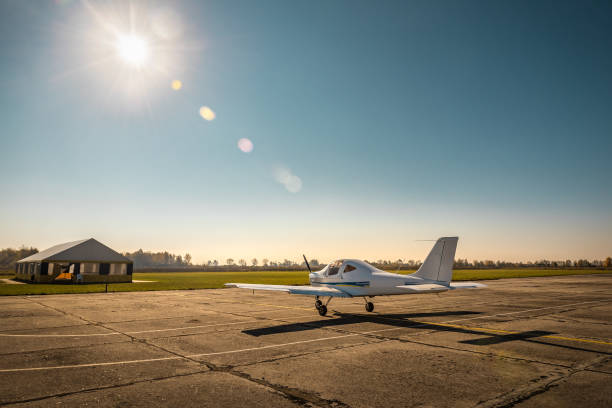

Getting to Taniti
Most visitors arrive to Taniti by air through our small airport, which accommodates small jets and propeller planes. We are expanding the airport to allow larger jets to land within the next few years. Alternatively, a small cruise ship docks in Yellow Leaf Bay once a week, offering another means of reaching our beautiful island.
Ground Transportation
Getting around Taniti is convenient with various transportation options:
- Public Buses: Operate in Taniti City from 5 a.m. to 11 p.m. every day.
- Private Buses: Serve the rest of the island, connecting major attractions and towns.
- Taxis: Readily available in Taniti City for quick and private transport.
- Rental Cars: Available near the airport from local rental agencies.
- Bicycles: Bikes and helmets can be rented from several vendors. Helmets are required by law.
Exploring on Foot
Taniti City is fairly flat and very walkable, making it easy to explore on foot. Many tourists enjoy staying in the area surrounding Merriton Landing, which offers a variety of attractions within walking distance.